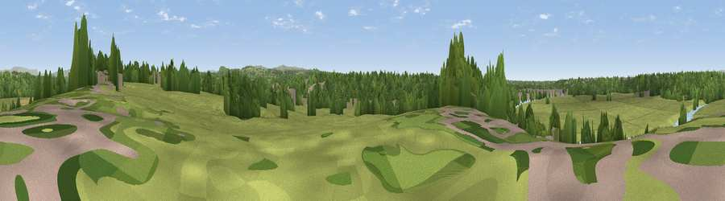

Viewpoint near Walton-le-Dale
#42933 in England · top 98% of its area beats it · near Walton-le-Dale · path 249 mWhere it is
The exact computed spot (SD 56825 28425). Click the marker for map links.
Public access: the nearest public right of way is about 249 m away — the final stretch may cross private land. Computed from Natural England's CRoW access layer and OpenStreetMap rights of way — not the legal definitive map. Always verify locally.
The view, rendered

A 360° render of this exact spot computed from the terrain model, tree cover and land cover — summer colours, afternoon light, calibrated against photographs of famous viewpoints. Real trees, hedges and buildings will differ in detail.
The panorama
Grey silhouette: terrain skyline in each direction (720 bearings, Earth curvature and refraction included). Dashed green: skyline with trees (+15 m) and buildings (+8 m) as obstacles. Blue strip: how far the ground is visible on each bearing.
Where the view opens
Wedge length = distance to the farthest visible ground on that bearing (vegetation-aware). Rings at 10, 25 and 50 km.
What fills the view
60% grassland · 28% woodland · 7% built-up · 3% water · 2% cropland
Angular shares of the visible panorama (visual magnitude), not map area. Landscape diversity 0.45 (0–1 Shannon).
Key numbers
More beautiful places nearby
The staircase of upgrades: each row has a higher view potential than everything closer. Driving times are estimates from straight-line distance, calibrated against real road routing — check an actual route before setting out.
| Place | Direction | Drive | Score |
|---|---|---|---|
| Viewpoint near Walton-le-Dale | WSW · 1 km | ~2 min | 31.3 |
| Viewpoint near Samlesbury | NNE · 3 km | ~8 min | 38.5 |
| Viewpoint near Hoghton | ESE · 5 km | ~11 min | 63.3 |
| Viewpoint near Brindle | SSE · 6 km | ~13 min | 66.0 |
| Viewpoint near Pleasington | E · 8 km | ~16 min | 69.3 |
| Viewpoint near Pleasington | E · 8 km | ~17 min | 69.8 |
| Viewpoint near Mellor | ENE · 9 km | ~17 min | 71.2 |
| Viewpoint near Pleasington | E · 9 km | ~18 min | 73.6 |
53.75039, -2.65622 · source: screening · position refined by local search. Computed location — check access rights before visiting.